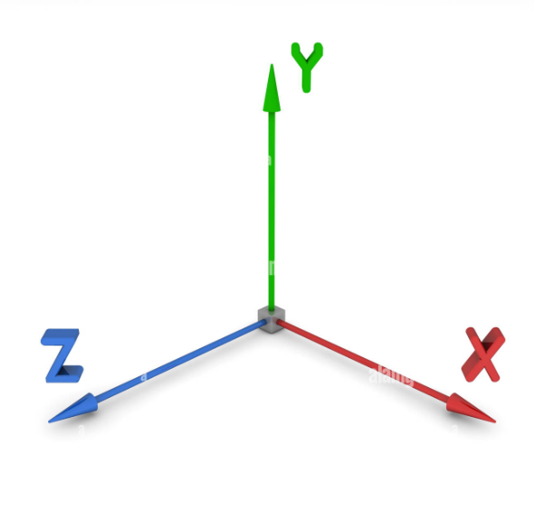

Coordinate system
A coordinate system is a system that uses one or more numbers, or coordinates, to uniquely determine the position of a
point or other geometric element in space. The most common coordinate system is the Cartesian coordinate system, named
after René Descartes, which uses two or three perpendicular axes to specify the position of a point in two or
three-dimensional space.
Here are the basic components of a Cartesian coordinate system:
Axes: These are the reference lines that define the coordinate system. In a two-dimensional Cartesian coordinate system,
there are two axes: the x-axis and the y-axis. In a three-dimensional system, there is an additional z-axis.
Origin: The point where the axes intersect is called the origin. It is usually denoted as (0, 0) in two dimensions, and
(0, 0, 0) in three dimensions.
Coordinates: Points in the coordinate system are identified by coordinates, which are ordered sets of numbers. In two
dimensions, a point is represented as (x, y), where x is the horizontal position along the x-axis, and y is the vertical
position along the y-axis. In three dimensions, it is represented as (x, y, z).
Quadrants: In a two-dimensional coordinate system, the plane is divided into four quadrants by the x-axis and y-axis.
The quadrants are labeled I, II, III, and IV in a counterclockwise direction.
The Cartesian coordinate system is widely used in mathematics, physics, engineering, computer science, and various other
fields for describing spatial relationships and solving geometric problems. Other coordinate systems, such as polar
coordinates and spherical coordinates, offer alternative ways to represent points in space and are used in specific
contexts.

Types
Cartesian Coordinate System (Rectangular Coordinate System): In a two-dimensional Cartesian coordinate system, points
are located using two numerical values, usually denoted as (x, y). In a three-dimensional Cartesian coordinate system,
points are located using three values, denoted as (x, y, z). The x, y, and z values represent distances along three
mutually perpendicular axes.
Polar Coordinate System: In polar coordinates, a point is represented by its distance from a fixed point (the pole or
origin) and the angle it makes with a fixed axis. The coordinates are usually written in the form (r, θ), where r is the
distance and θ is the angle.
Cylindrical Coordinate System: This is an extension of polar coordinates into three dimensions. In addition to the polar
coordinates (r, θ), a third coordinate (z) is used to represent the height or distance along the axis.
Spherical Coordinate System: Similar to cylindrical coordinates, spherical coordinates use two angles (θ and φ) and a
radial distance (r) to represent a point in three-dimensional space.
Homogeneous Coordinate System: This is often used in computer graphics and computer vision. It extends the Cartesian
coordinate system by adding an extra coordinate, usually denoted as w. This system is particularly useful for
representing transformations in projective geometry.
Geographic Coordinate System: Used for locating points on the Earth's surface, it uses latitude and longitude values to
specify a point's position.
These coordinate systems provide a framework for describing the position of points, shapes, or objects in space, and
they are essential in various fields such as mathematics, physics, engineering, computer science, and geography. The
choice of coordinate system depends on the nature of the problem being solved and the convenience of representing the
information.